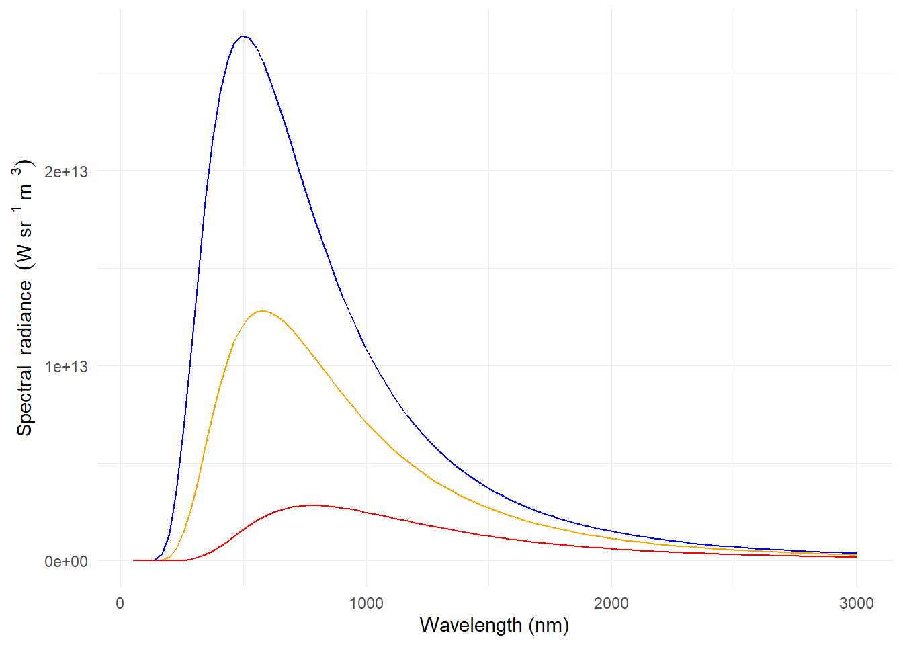

Light Environment
Based on BTV 1ed 1. Introduction
Abstract
This chapter discusses the light environment of terrestrial and aquatic plants. It provides the foundation for subsequent chapters in the book.
Solar radiation at ground level
Position of the sun
When studying plants we frequently need to describe the position of the sun because of its effect on spectral irradiance and as a determinant of day length. The azimuth angle (\(\phi\)) is usually measured clockwise from the North on a horizontal plane. The position on the vertical plane is measured either as the zenith angle (\(\theta\)) downwards from the zenith, or as an elevation angle (\(h\)) upwards from the horizon. Consequently \(h + \theta = 90^\circ = \frac{\pi}{2}\,\)radians. When describing the position of the sun as in Figure 1 the observer is situated at the origin of the system of coordinates used to describe the angles.

The daily path of the sun in the sky depends on the time of the year and the latitude. The time of solar noon depends on the actual geographic location, and nearly always differs from the local-time noon which is based on a time zone and possibly affected by a shift of one or more hours to enhance daylight use, especially in summer time.
Highly accurate astronomical formulas are available and can be used to compute the current, past and future positions of the sun in the sky (e.g., Meeus 1998). Less accurate, but simpler to compute, formulas also exist. These formulas can also be use to compute day- and night lengths based on different twilight definitions.
Note
The accuracy of astronomical formulas is less when the sun is near the horizon because, as seen in the previous chapter, the transition from vacuum to the atmosphere introduces a small angular displacement of the light beam depending on the refractive index and angle of incidence. The difficulty is that the refractive index (\(\nu\)) of the air depends on its water content, which is not constant.
The path of the sun in the sky determines the lengths of the day and night. The most frequently used criterion for the day to night and night to days transitions is that the upper rim of the solar disk coincides with the astronomical horizon. As the solar disk is approximately 2 degrees in diameter, the transition between day and night is in this case when the centre of the solar disk is one degree below the horizon. Alternatively, the centre of the solar disk can be used coinciding with the astronomical horizon can be used as the criterion.

{kind=link}
Twilight is the period before sunrise and after sunset when there is more intense diffuse light than further into the night (Figure 2). The definitions of twilight are based on practical considerations of human activities, and called civil, naval and astronomical (Figure 3). During civil twilight artificial lighting is usually not needed in cities. For nautical twilight I have seen two descriptions: 1) before nautical dawn and after nautical dawn it is possible to navigate based on the stars, and 2) after nautical dawn and before nautical dusk navigation by sight is possible. Before astronomical dawn and after astronomical dusk stars of sixth magnitude are visible. These three descriptions are very approximate, as they do not consider the effect of clouds, light pollution from artificial sources, or other source of light.

The day length through the year computed for three cities, one of them, Ivalo at the northern latitude within the Artic circle.
If we include twilight, the estimated length of the photoperiod increases (Figure 5).
Tip
Even though day length or photoperiod duration is normally based on the astronomical horizon, in many cases there are obstacles that occlude the sun from view until later at dawn or earlier at dusk: mountains, vegetation, buildings, etc. Thus, in some cases it may be more relevant for a scientific study with plants to consider sun elevation angles \(h > 0\) as the criterion; even different angles can be used for day start and day end.
The question remains of what light level is actually detected by plants and other organisms as the night-day and day-night transitions. Most likely the exact value depends on the genotype and the realized phenotype. However, at dawn and dusk irradiance increases and decreases, respectively, qquite fast at low and medium latitudes. At high latitudes, at some times the year twilight lasts for a long time making the change in irradiance more gradual. At civil dawn/dusk irradiance is already very low.
The dependency of the elevation angle on time of the year and latitude is illustrated in Figure 6.
Add links to previous chapter
The spectrum of solar radiation
The solar “constant” varies between 1.361 and 1.362 \(W m^{-2}\) due to changes in solar activity. The solar spectrum at the top of the atmosphere varies very little in time, and is usually assumed constant.
In outer space, in vacuum, no scattering takes place as the light travels, and because of this, the sky looks completely black. Planets and the Moon do reflect light allowing us to see them.
Before reaching the Earth’s surface radiation from the sun travels through the atmosphere. The sun elevation angle affects the length of the path that the light arriving from the sun travels through the atmosphere. In atmospheric physics it is common to describe spectra as corresponding to AM1 when the sun is at the zenith, i.e., AM1 stands for one atmosphere thickness and AM1.5 indicates that the length of the path through the atmosphere is 1.5 times that when the sun is at the zenith.
The length of the path through the atmosphere is, in reality, not exactly the length computed by trigonometry, but close to it. An empirical formula can be used as an approximation (Kasten1989?) to compute AM values from the elevation angle (\(h\)) (Figure 7).
Light when travelling through the atmosphere interacts with the gases and particles composing it. The light is attenuated and scattered . Different wavelengths are differently affected by these processes, giving us a blue sky and warmer coloured direct sunlight. In other words, the daylight spectrum depends on the position of the sun in the sky, and on the composition of the atmosphere along this path (Figure 8 and Figure 9). In addition to molecular absorption and scattering, aerosols, both liquid like water and solid like ice and dust, interact with light.
Above, we used the word light with its everyday meaning. Its technical definition is of radiation visible to humans. Ultraviolet, visible and infrared radiation (taken together are called in meteorolgy shortwave radiation) are components of solar radiation.
Note
Radiation from the sun reaches the Earth’s surface in about eight minutes (\(t\) = time, \(r_0\) = distance sun to earth, \(c\) = velocity of light in vacuum): \[t = \frac{r_0}{c} \approx \frac{150 \times 10^9 ~{\rm m}}{3 \times 10^8 ~\frac{\rm m}{\rm s}} = 500 ~{\rm s} = 8.3 ~{\rm min}\].
The energy radiance (\(L\)) of radiation emitted by the sun is similar, but not identical, to the emission spectrum of a black body. The solar spectrum has a fine structure of peaks and valleys arising from the atoms and molecules in the sun while black body emission is described by a smooth curve. A “match” based on the wavelength at which spectral energy radiance is at its maximum can be used as criterion to estimate the temperature of the sun’s surface. Obviously, we use the extraterrestrial spectrum for this match. We see in the AM0 curve in Figure 8 that the wavelength at the maximum is near 500 nm. In reality the temperature of the sun surface is not uniform, and different sources mention as its average temperatures between 5800 K and 5500 K. Comparing the AM0 curve in Figure 8 to the 5800 K curve in Figure 10 the similary of their shapes is clear.

Planck’s law describes black body emission at temperature \(T\) (Figure 10), expressed as absolute temperature measured in degrees Kelvin (K):
\[L_s(\lambda,T) = \frac{2hc^2}{\lambda^5}\cdot\frac{1}{\mathrm{e}^{(hc/k_\mathrm{B}T\lambda)}-1}\]
with Boltzmann’s constant \(k_\mathrm{B}=1.381\times 10^{-23}\) .
The “equivalent temperature” of a black body is given by Wien’s displacement law (Figure 11), which gives the wavelength at which the radiative energy emitted by a black body is at its maximum as a function of its absolute temperature.
\[\lambda_\mathrm{max} \cdot T = 2.898 \times 10^6 \,{\rm nm\,K}\]

Tip
The concept of “colour temperature” used for describing the emission of lamps used for illumination and more generaly in photography differs in that it takes into account human colour vision when determining the match between the black body emission spectrum and the spectrum of an arbitrary light source.
compute CCT
The spectral irradiance of the sun \(\irr[s](\lambda)\) can be estimated assuming a homogeneous flux and using the correlation of intensity and radiance from their definitions in table [tab:Phys:Quants]. The intensity of the sun \(\intensity[s](\lambda)\) is given by the radiance \(\radiance[s](\lambda)\) multiplied by the apparent sun surface (a non-tilted disk of radius \(r_s=7\times 10^5\) km). To calculate the decreased solar irradiance at the moment of reaching the Earth’s atmosphere, the distance of the sun to the Earth (\(r_0=150\times 10^6\) km) has to be taken into account due to the inverse square law of irradiance of equation ([equ_r2law]). Thus, the extraterrestrial solar irradiance is \[\irr[s](\lambda)=\radiance[s](\lambda)\cdot\frac{\pi r_s^2}{r_0^2}\label{equ_extraterrestrial}\] Remembering the solid angle of equation ([equ_solidangle]), the right multiplication factor represents the solid angle of the sun’s disk as seen from the Earth’s surface (\(\approx 6.8\times 10^{-5}\) sr). Figure [fig_sun] shows the spectrum of the measured extraterrestrial solar radiation (Wehrli, 1985)1 and the spectrum calculated by equation 1.14 using Planck’s law of equation 1.12 at a black body temperature of 5800 K. Integrated over all wavelengths, \(\irr[s]\) is about 1361 to 1362 at top of the atmosphere (Kopp2011?). This value is called the ‘solar constant’. In former times, depending on different measurements, \(\irr[s]\) varies by a few percent (iqbal83?). For example, the irradiance at the top of the atmosphere (the integrated value) changes by \(\pm 50\) (3.7 %) during the year due to distance variation caused by orbit excentricity (moble94?). More accurate measurements during the last 25 years by spaceborne radiometers show a variability of the solar radiation of a few tenth of a percent. A detailed analysis is given by (froeh04?). \(\irr[s]\) can also be calculated by the Stefan-Boltzmann Law: the total energy emitted from the surface of a black body is proportional to the fourth power of its temperature. For an isotropically emitting source (Lambertian emitter), this means \[\radiance = \frac{\sigma}{\pi} \cdot T^4 \label{equ_boltzmann}\] with the Stefan-Boltzmann constant \(\sigma=5.6705\times 10^{-8}\) W m\(^{-2}\) K\(^{-4}\). With \(T = 5800\) K equation [equ_boltzmann] gives the radiance of the solar disc. From this value, we can obtain an approximation of the solar constant, by taking into account the distance from the Earth to the Sun and the apparent size of the solar disc (see equations [equ_solidangle] and [equ_r2law]).
The total solar irradiance covers a wide range of wavelengths. Using some of the ‘colours’ introduced in table [tab:Waverange], table [tab_sun] lists the irradiance and fraction of \(\irr[s]\) of different wavelength intervals.
| Colour | Wavelength (nm) | Irradiance () | Fraction of \(\irr[s]\) (%) |
|---|---|---|---|
| 100 – 280 | 7 | 0.5 | |
| 280 – 315 | 17 | 1.2 | |
| 315 – 400 | 84 | 6.1 | |
| VIS | 400 – 700 | 531 | 38.9 |
| near IR | 700 – 1 000 | 309 | 22.6 |
| mid and far IR | \(>\) 1 000 | 419 | 30.7 |
| total | 1 367 | 100.0 |
The extraterrestrial solar spectrum differs from that at ground level due to the absorption of radiation by the atmosphere, because the absorption peaks of water, and other components of the atmosphere, cause corresponding valleys to appear in the solar spectrum at ground level. For example, estimates from measurements of the total global irradiance at Helmholtz Zentrum München (11.60\(\degree\) E, 48.22\(\degree\) N, 490 m above sea level) on two sunny days (17\(^{\rm th}\) April 1996, sun zenith angle of 38\(^\circ\) and 27\(^{\rm th}\) May 2005, 27\(^\circ\)) result in about 5% for wavelengths below 400 nm, about 45% from 400 to 700 nm, and about 50% above 700 nm. In relation to plant research, only the coarse structure of peaks and valleys is relevant, because absorption spectra of pigments in vivo have broad peaks and valleys. However, the solar spectrum has a much finer structure, due to emission and absorption lines of elements, which is not observable with the spectroradiometers normally used in plant research.
At the Earth’s surface, the incident radiation or global:rad has two components, direct:rad and diffuse:rad. Direct radiation is radiation travelling directly from the sun, while diffuse radiation is that scattered by the atmosphere. Diffuse radiation is what gives the blue colour to the sky and white colour to clouds. The relative contribution of direct and diffuse radiation to global radiation varies with wavelength and weather conditions. The contribution of diffuse radiation is larger in the UV region, and in the presence of clouds (Figures [fig:sky:photos] and [fig:diffuse:UV]).
Not only total irradiance, but also the wavelength distribution of the solar spectrum changes with the seasons of the year and time of day. The spectral wavelength distribution is also changed by the amount of -absorbing ozone in the atmosphere, known as the ozone column. Figure [fig:solar:spectra:one:day] shows how spectral irradiance changes throughout one day. When the whole spectrum is plotted using a linear scale the effect of ozone depletion is not visible, however, if we plot only the region (Figure [fig:solarUV:spectrum:noon]) or use a logarithmic scale (Figure [fig:solar:spectra:one:day:log]), the effect becomes clearly visible. In addition, on a log scale, it is clear that the relative effect of ozone depletion on the spectral irradiance at a given wavelength increases with decreasing wavelength.
Seasonal variation in irradiance has a larger relative amplitude than variation in (Figure [fig:diffuse.light]). This causes a seasonal variation in the : ratio (Figure [fig:UVB:Erlangen]). In addition to the regular seasonal variation, there is random variation as a result of changes in clouds (Figure [fig:UVB:Erlangen]). Normal seasonal and spatial variation in can be sensed by plants, and could play a role in their adaptation to seasons and/or their position in the canopy.
irradiance increases with elevation in mountains and with decreasing latitude (Figure [fig:UVB:latitude]) and is particularly high on high mountains in equatorial regions. This has been hypothesized to be a factor in the determination of the tree line2 in these mountains (Flenley1992?).
An increase in the irradiance is caused by depletion of the ozone layer in the stratosphere, mainly as a consequence of the release of chlorofluorocarbons (CFCs), used in cooling devices such as refrigerators and air conditioners, and in some spray cans (see Graedel1993?). The most dramatic manifestation of this has been the seasonal formation of an “ozone hole” over Antarctica. It is controversial whether a true ozone hole has already formed in the Arctic, but strong depletion has occurred in year 2011 (Manney2011?) and atmospheric conditions needed for the formation of a “deep” ozone hole are not very different from those prevalent in recent years. Not so dramatic, but consistent, depletion has also been observed at mid-latitudes in both hemispheres. CFCs and some other halocarbons have been phased out following the Montreal agreement and later updates. However, as CFCs have a long half life in the atmosphere, of the order of 100 years, their effect on the ozone layer will persist for many years, even after their use has been drastically reduced. Model-based predictions of changes in atmospheric circulation due to global climate change have been used to derive future trends in index and ozone column thickness (Hegglin2009?). In addition, increased cloudiness and pollution, could lead to decreased and , sometimes called ‘global dimming’ (e.g. Stanhill2001?). It should be noted that, through reflection, broken clouds can locally increase irradiance to values above those under clear-sky conditions (Frederick1993?; Diaz1996?).
UV radiation within plant canopies
The attenuation of visible and radiation by canopies is difficult to describe mathematically because it is a complex phenomenon. The spatial distribution of leaves is in most cases not uniform, the display angle of the leaves is not random, and may change with depth in the canopy, and even in some cases with time-of-day. Here we give only a description of the simplest approach, the use of an approximation based on Beer’s law as modified by (Monsi1953?), reviewed by (Hirose2005?). Beer’s law (Equation [eq:Beer-Lambert]) assumes a homogeneous light absorbing medium such as a solution. However, a canopy is heterogenous, with discrete light absorbing objects (the leaves and stems) distributed in a transparent medium (air). \[I_z = I_0\cdot\mathrm{e}^{-K\,L_z} \label{eq:Monsi:Saeki}\] Equation [eq:Monsi:Saeki] describes the radiation attenuated as a function of leaf area index (\(L\) or ) at a given canopy depth (\(z\)). The equation does not explicitly account for the effects of the statistical spatial distribution of leaves and the effects of changing incidence angle of the radiation. Consequently, the empirical extinction coefficient (\(K\)) obtained may vary depending on these factors. \(K\) is not only a function of plant species (through leaf optical properties, and how leaves are displayed), but also of time-of-day, and season-of-year—as a consequence of solar zenith angle—and degree of scattering of the incident radiation. As the degree of scattering depends on clouds, and also on wavelength, the extinction coefficient is different for and visible radiation. Radiation extinction in canopies has yet to be studied in detail with respect to radiation, mainly because of difficulties in the measurement of radiation compared to , a spectral region which has been extensively studied.
Ultraviolet radiation is strongly absorbed by plant surfaces, although cuticular waxes and pubescence on leaves can sometimes increase reflectance. The diffuse component of radiation is larger than that of visible light (Figure [fig:diffuse.light]). In sunlit patches in forest gaps the diffuse radiation percentage is lower than in open areas, because direct:rad is not attenuated but part of the sky is occluded by the surrounding forest. Attenuation with canopy depth is on average usually more gradual for than for . The irradiance decreases with depth in tree canopies, but the ratio tends to increase (see Brown1994?). In contrast, (Deckmyn2001?) observed a decrease in ratio in white clover canopies with planophyle leaves. (Allen1975?) modelled the penetration in plant canopies, under normal and depleted ozone conditions. (Parisi1996?) measured doses within model plant canopies using dosimeters. The position of leaves affects exposure, and it has been observed that heliotropism can moderate exposure and could be a factor contributing to differences in tolerance among crop cultivars (Grant1998?; Grant1999?; Grant1999a?; Grant2004?).
Detailed accounts of different models describing the interaction of radiation and plant canopies, taking into account the properties of foliage, are given by (Campbell1998?) and (Monteith2008?).
UV radiation in aquatic environments
As solar radiation passes through a body of water, its spectrum changes with depth in a wavelength-dependent manner, determined by the optical characteristics of that water body. The penetration of UV radiation through water bodies can vary from only few centimetres in highly humic lakes (Kirk1994?; Kirk1994b?; Huovinen2003?) to dozens of metres in the oceans (Smith1992?; Kirk1994?; Kirk1994b?). Some irradiance is reflected at the water surface, but the extent to which wavelengths in the UV to IR range penetrate water bodies depends mainly on (1) attenuation by water itself, (2) coloured dissolved organic matter (CDOM), and seston. Seston is the sum of living organic material (mainly phytoplankton) and non-living material (tripton). Non-living particles are further distinguished between organic material (detritus) and inorganic suspended matter. Each fraction has its own characteristic spectral absorption and scattering properties (reviewed by dekke93?; Kirk1994?; Kirk1994b?; Hargreaves2003?; Wozniak2007?).
Particularly in coastal areas and shallow areas of lakes and streams, irradiance reflected from the ground or sea-bed beneath the water (henceforth bottom) influences the profile of radiation through the aquatic environment. This reflectance is described by a bidirectional reflectance distribution function (BRDF), which is wavelength specific and depends on the incident and reflected angle. If the reflectance is equally distributed in all directions, the bottom is a so called Lambertian reflector and the BRDF is constant. The bottom reflectance is greatly influenced by its slope and properties, i.e. whether the bottom is bare sediment or covered by algae and submersed vegetation (e.g. marit94?; alber03?; moble03a?; moble03b?; pinne07?).
Refraction
The refraction of incoming (downwelling) radiance at the water surface can be determined by Snell’s law, which describes the angular refraction of the incident beam. The radiation passes the first medium with a refractive index \(n_1\) and then the second medium with a refractive index \(n_2\). If the incoming direction of the radiation is given by the angle \(\theta_1\), the beam is refracted to the angle \(\theta_2\). Snell’s law is \[n_1 \cdot \sin\theta_1 = n_2 \cdot \sin\theta_2\] For the case of radiation arriving from the air under the incident angle \(\theta_i\) and going into the water with the transmitted angle \(\theta_t\), this yields a refractive index for the air of \(n_a=1\) and for the water of \(n_W=1.33\) \[\theta_t = \arcsin \left( 0.75\cdot \sin\theta_i \right)\]
Theoretically, \(n_W\) is not constant but depends on temperature, wavelength and salinity, as described by (quanx95?). In principle, the shorter the wavelength, the higher the refractive index of water, but in practice the wavelength-dependent difference in refraction is unimportant. For example comparing the values at 400 and 800 nm for 20and no salinity produces a difference of \(<\) 0.5%. If the wind speed is high, the slope of surface waves also has to be taken into account. A rough surface reflects and transmits the incoming radiation beam in more directions and makes the radiation field more diffuse than a smooth surface.
Absorption and scattering by pure water
Water itself absorbs and scatters radiation. The optical properties of the water in the visible and ultraviolet (UV) spectrum are not precisely known, since no theoretical model exists which exactly describes the absorption and scattering properties of pure water. Therefore, it is necessary to rely on laboratory measurements to approximate the values of these parameters. Investigations into absorption by water \(a_W\) were initially documented by (morel74?), (smith76?), (smith81?), (pegau93?) and more recently by (buite94?) and (hakvo94?). The absorption properties of water also depend on temperature. The influence of temperature is weak below 700 nm, but its effect increases with increasing wavelength; so, for example, a temperature increase of 10 K produces a \(\approx\)7% change in the absolute value of \(a_W\) at 740 nm.
The scattering of radiation by molecules in liquids has been modelled theoretically by (smolu08?) and (einst10?). This approach is based on statistical thermodynamics and is called the theory of fluctuation. Theoretically, the scattering function is wavelength-dependent and follows the \(\lambda^{-4}\) law. Experiments show a slight deviation from the model, giving a better correlation with \(\lambda^{-4.32}\) (morel74?) due to the effects of isothermal compressibility, the refractive index of water, and the pressure derivative of the refractive index of water (hakvo94?).
The wavelength dependency of the absorption and scattering coefficients of pure water are shown in Figure [fig:Water:Abs_Scat] using data from (hakvo94?). Water mainly contributes to the attenuation of PAR and IR wavelengths, since absorption by pure water increases from around 550 nm towards longer wavelengths.
Absorption and scattering by water constituents
Absorption and scattering by water constituents is the sum of (1) absorption by CDOM, sometimes also called yellow or humic substances, gilvin or gelbstoff, (2) absorption and scattering by living material like phytoplankton, and (3) absorption and scattering by dead organic and inorganic particles. The influence of each constituent on the scattering process depends on wavelength, particle size, concentration, and refractive index. Theoretical details are explained in, for example, (vhuls81?).
CDOM mainly refers to coloured dissolved humic materials and consists of humic and fulvic acids, originating from decomposed plant material suspended in the water or entering from the surrounding catchment area. The pigments in humic and fulvic acids absorb strongly in the blue and UV wavelengths and are dissolved and therefore do not scatter irradiance. (kalle66?) recognised that CDOM absorption decreases exponentially with increasing wavelength in the visible part of the spectra. Following the study of (morel76?), (brica81?) expressed this relationship in the following model: for a known absorption at a wavelength \(\lambda_0=440\) nm, the CDOM absorption \(a_Y\) can be determined by \[a_Y(\lambda) = a_Y(\lambda_0)\cdot {\rm e}^{-s_Y(\lambda-\lambda_0)} \label{equ_ay}\] Although the exponential coefficient \(s_Y\) is variable, a standard value of \(s_Y=0.014\) nm\(^{-1}\) is commonly used. (brica81?) compared the value of \(s_Y\) across many data sets and reported a standard deviation of only \(\Delta s_Y=\pm 0.003\) nm\(^{-1}\). The amount of CDOM in water is determined by filtration using membrane filters of 0.2 \(\mymu\)m pore size. The filtrate is collected into a quartz cuvette with length \(l\) and put into a (double beam) spectrophotometer to measure its absorbance (optical density) \(A(\lambda)\). Then, \(a_Y(\lambda)=2.303\cdot\frac{A(\lambda)}{l}\) (Kirk1994?). The absorption coefficient at 440 nm has been used as an indication of optical colour (Kirk1994?), while size of humic molecules has been estimated from the ratio \(\frac{a_Y(\lambda=250{\rm nm})}{a_Y(\lambda={\rm 365 nm})}\), with increasing size indicated by smaller ratios (DeHaan1972?; DeHaan1987?; DeHaan1993?). To determine \(a_Y\) from clearer (e.g. oceanic) waters, a cuvette with a 10 cm path-length is generally needed due to their low values of absorption.
Phytoplankton can contribute to the attenuation of PAR through absorption by their photosynthetic pigments such as chlorophyll and pheophytin, but they can also cause scattering. The absorption by phytoplankton \(a_P\) is the sum of absorption by each pigment multiplied each by their concentrations. Due to the fact that many species of phytoplankton occur in aquatic environments and every species contains more than one pigment, it is more practicable to calculate the absorption by mean specific absorption coefficients for each different algal species separately. This has been done by (gegep98?) for freshwater Lake Constance in Germany and by (prieu81?) for an oceanic environment. Besides these examples, there are other models for oceanic waters that use the specific in vivo absorption coefficient and concentration of chlorophyll-a, \(a_{chl}^*\) and \(C_{chl}\), respectively. (morel91?) found that the power law \(a_P = 0.06\, a_{chl}^*\, [C_{chl}]^{0.65}\), which was first proposed by (prieu81?), provided the best estimate of the absorption coefficient for his data set. \(C_{chl}\) is the concentration of chlorophyll-a in units of \(\mymu\)g l\(^{-1}\). Figure [fig:Phyto:Abs] shows the specific oceanic chlorophyll absorption coefficient from (morel91?) normalized to maximum absorption at 440 nm. Figure [fig:Phyto:Abs] also shows laboratory measurements of chlorophyll-a and chlorophyll-b absorption3 after (frigaard1996?). Spectra for chlorophyll absorption, and that of various other photochemically-relevant substances, are also available in computer software such as PhotochemCAD4 (lindsey1998?; lindsey2005?). The empirical model of (brica95?) parameterises the specific absorption coefficient from \(C_{chl}\). This model draws on extensive studies of more than 800 spectra to give \(a_P^*(\lambda) = A(\lambda)[C_{chl}]^{-B(\lambda)}\) with positive empirical coefficients \(A\) and \(B\) depending on wavelength. The model incorporates both the package effect of phytoplankton cells and the effect of the varying pigment composition on absorption.
The particulate structure of phytoplankton cells causes scattering. The influence of phytoplankton on the total scattering coefficient depends on the other constituents of the water body. For water containing a low concentration of inorganic suspended sediment scattering is driven by the concentration of phytoplankton (as occurs in the open ocean). (gordo83?) developed an empirical model, which directly correlates scattering with the pigment concentration of chlorophyll-a \(C_{chl}\) in units of \(\mymu\)g l\(^{-1}\). The scattering coefficient of phytoplankton \(b_P\) in units of m\(^{-1}\) is given by \[b_P(\lambda) = B \cdot [C_{chl}]^{0.62} \cdot \left(\frac{\lambda_0}{\lambda}\right) \label{equ_bp_emp}\] with \(\lambda_0=550\) nm and \(B=0.3\) as mean values for oceanic waters dominated by phytoplankton. The equation ([equ_bp_emp]) is valid for a range of phytoplankton concentrations from 0.05 to 1 \(\mymu\)g l\(^{-1}\). (gordo83?) found that oceanic waters have a value of \(B\le 0.45\). Higher values are used for other aquatic environments, for example turbid coastal waters. In coastal regions, (sathy89?) proposed that the scattering coefficient is indirectly proportional to absorption by phytoplankton: \(b_P(\lambda) \propto 1/a_P(\lambda)\). The proportionality factor depends on the concentration of chlorophyll-a in the same manner as the scattering coefficient of equation ([equ_bp_emp]). (dekke93?) investigated the contribution to scattering of each water constituent in inland waters5. He found that the composition of scattering particles was more variable in inland waters than in the ocean and it depended on the trophic state of the water and therefore on the distribution of organic and inorganic particulate matter. The scattering and backscattering coefficient of phytoplankton can be determined by \(b_P(\lambda)=b_P^*(\lambda) \cdot C_P\) where the specific scattering coefficient of phytoplankton is \(b_P^*\). For lakes (dekke93?) reported that the specific scattering coefficient of phytoplankton ranges from 0.12 to 0.18 m\(^2\)mg\(^{-1}\) at a wavelength of 550 nm. The specific scattering coefficients can be obtained by integrating the scattering phase function of the observed matter, here, phytoplankton. Extensive and commonly used measurements were done by (petzo77?). Other functions can be found for example in (moble94?).
Particulate matter in water bodies consists of organic and inorganic material. The organic constituents are contained in phytoplankton cells or are fragments of dead plankton and faecal pellets of zooplankton. These parts are often called detritus. Inorganic particles include suspended mineral coming from inflows or resuspension at coastal regions. They mainly consist of quartz, clay, and calcite. There are only a few published values of the specific absorption coefficients of suspended particles in water from aquatic environments because they are difficult to separate into their individual constituent parts. A comparison of these values is given by (pozdn03?). In general, absorption by all suspended particles in most water bodies is very low and it is negligible for inorganic particles. (roesl89?) produced the following relationship for absorption by detritus in coastal waters which is very similar that of CDOM: \[a_X(\lambda) = a_X(\lambda_0) \cdot {\rm e}^{-s_X(\lambda-\lambda_0)} \label{equ_adet}\] with a mean value of \(s_X=0.011\) nm\(^{-1}\) and \(a_X(\lambda_0)=0.09\) m\(^{-1}\) at \(\lambda_0=400\) nm for their data. Particulate matter in general causes more scattering of irradiance than it absorbs. In coastal waters and freshwater, scattering is higher than in oceanic waters due to the additional presence of particles not related to phytoplankton. These particles come from suspended inorganic sediments of different sizes. Scattering is caused by differences in the refractive indices of the two materials (the water medium and the material of the particles) and are due to the ratio of particle size to wavelength. Different functions of scattering coefficients and phase functions are, for example, described by (moble94?). Especially turbid and coastal waters, or rivers and lakes, are dominated by large particles (\(>1\) \(\mymu\)m and a refraction index of 1.03). Therefore, the scattering coefficient of non-living particles \(b_X\) can be estimated while neglecting their size distribution and wavelength dependence. Thus, \(b_X\) is derived from \(b_X(\lambda) = b_X^* \cdot C_X\), with the concentration of the total suspended matter \(C_X\) and the specific scattering coefficients \(b_X^*\). (dekke93?) gave example specific scattering coefficients of 0.23 to 0.79 m\(^2\) g\(^{-1}\) for different trophic states in lakes.
Results and effects
In summary, after considering all the components that absorb radiation, in very clear non-productive oceanic waters blue-green wavelengths in the PAR spectrum dominate, whereas in highly-coloured, humic inland waters blue wavelengths are rapidly attenuated. In humic lakes, CDOM largely governs UV attenuation (e.g. Kirk1994?; Kirk1994b?; Scully1994?; Huovinen2003?)), whereas in oceans (Smith1979?) and clear lakes containing low CDOM concentrations the contribution of phytoplankton to UV attenuation can be significant (Sommaruga1997?). If very turbid water contains a large amount of inorganic particles, CDOM is bonded by calcium carbonate contained in the particles, and consequently the colour of the water returns to blue.
There is marked variation in the penetration of UV radiation among water bodies, and within a water body during the year. Global changes, such as climate warming and acidification (Schindler1996?; Yan1996?; Donahue1998?) can lead to increased underwater UV penetration, likewise UV-B radiation itself which can positively affect its own penetration through the photodegradation of CDOM (Morris1997?). Variation in the absorption properties of dissolved organic compounds with the seasons and according to their origin and molecular weight (Stewart1980?; Hessen1998?; Lean1998?), interferes with our estimation of UV penetration based on CDOM concentrations. Temporal changes in the absorption characteristics of CDOM have also been reported, with fresh CDOM being photochemically more active than older CDOM (Lean1998?). It is also notable that UV radiation has been shown to penetrate deeper in saline prairie lakes than in fresh waters of corresponding CDOM concentrations (Arts2000?).
Estimations of CDOM are relatively easy to perform and therefore often used for in situ and remote sensing measurements of optical properties. However, another parameter called dissolved organic carbon (DOC, in units of mg l\(^{-1}\)) is also useful to measure, since it is more interpretable for studies of carbon cycling and in the context of global change research. (kowal10?), report that CDOM contributes approximately 20% to the total DOC pool in the open ocean and up to 70% in coastal areas. Unfortunately, on a global scale it has not yet been possible to make a direct link between CDOM and DOC due to the heterogeneous organic composition of CDOM. Until that connection is made, estimation of the universal bulk carbon-specific CDOM absorption coefficient, defined as the ratio of CDOM absorption to DOC concentration, remains almost impossible (Wozniak2007?), but at least there are good correlations between \(a_Y\) and DOC concentrations in coastal areas (kowal10?).
Aquatic organisms can be affected not only directly but also indirectly through UV-dependent changes in the surrounding water, e.g. through increased formation of photochemical reaction products such as singlet oxygen and hydrogen peroxide. Especially in lakes with low DOC concentrations, photoenhanced toxicity of some environmental contaminants or release of complexed metals into the water can occur due to the photodegradation of organic matter (Zepp1982?; Palenik1991?; Hessen1994?; Arfsten1996?; Scully1997?). Despite the potential for detrimental effects, the final impact of UV radiation on organisms may be mitigated by their protective and repair mechanisms (Karentz1991?; Mitchell1993?; Vincent1993?), which somehow also depend on certain wavelengths of irradiation. When evaluating the exposure of seaweeds to UV radiation, it should be taken into account that other factors, such as kelp canopies, can markedly reduce the PAR and UV radiation reaching their understorey. Furthermore, the underwater radiation received by seaweeds can be significantly altered depending on the tidal range (Huovinen2011?). Phenolic compounds released from large brown algae into the surrounding water can also locally attenuate UV radiation.
Classifications of water bodies based on their optical characteristics have been developed as general tools in order to allow comparisons between different water bodies. (Jerlov1976?) traditional and widely-used classification of marine waters, based on their transmittance of irradiance at different wavelengths, recognizes three oceanic (I–III) and nine coastal (1–9) types of water body (Figure [fig:Jerlov]). (Morel1977?) classified ocean waters into two types based on their optically dominant components: (i) phytoplankton and their products dominate case-i waters, (ii) particles and dissolved coloured material dominate case-ii waters. The classification proposed by (Kirk1980?) is principally suited to inland waters and is based on the spectral absorption of the soluble and particulate fractions. (Kirk1980?) defined type G waters, in which CDOM is the dominant light-absorbing component, compared with type T, W and A waters, where tripton, water itself and phytoplankton dominate respectively. Beyond these scales, various other optical classifications have also been proposed (reviewed by Kirk1994?; Hargreaves2003?).
Modelling of underwater radiation
Following Beer’s law (Equation [eq:Beer-Lambert]), for deep water (no reflection from bottom), radiance \(L(\lambda)\) decreases exponentially with depth \(z\) in the water column: \[L(z,\lambda) = L(z=0,\lambda)\cdot\mathrm{e}^{-\frac{a\cdot z}{\cos\theta}} \label{equ_beer}\] alternatively written as \[\cos\theta\,\frac{{\rm d}L(z,\lambda)}{{\rm d}z} = -a\cdot L(z,\lambda) \label{equ_dbeer}\] \(\theta\) is the zenith angle of the incoming (downwelling) radiance in water. Note that Eqs. [equ_beer] and [equ_dbeer] are only valid if the water column is homogeneous with depth and there are no scattering particles and internal sources of light in the water, i.e. no fluorescence, raman scattering, nor bioluminescence. Thus, calculation of actual radiative transfer in water (not under idealised conditions) is much more complicated and can only be solved approximately by using empirical, semi-analytical or computational models (dekke93?; moble94?; leezp02?; alber06?).
The radiative transfer equations [equ_beer] and [equ_dbeer] are valid for radiance \(L\), which represents the collimated beam from one specific direction. Due to their construction, radiance detectors do not measure a beam from an infinitely small solid angle, they have an aperture of typically one or two degrees. Other types of detectors sense light from more than one direction, they measure the entire sphere or hemisphere (for details see also section [sec:basic:concepts] on page ), by integrating the incoming radiance over all directions. Another useful relationship between irradiance and fluence rate can be obtained using the Gershun equation: \[\frac{\rm d}{{\rm d}z} E(z,\lambda) = -a \, E_0(z,\lambda) \label{equ_gershun}\] If, for example, only the downwelling irradiance \(E_d(z,\lambda)\) is measured or necessary for calculating radiative transfer, Equation [equ_dbeer] yields \[\frac{{\rm d}E_d(z,\lambda)}{{\rm d}z} = -K_d\cdot E_d(z,\lambda) \label{equ_downirr}\] giving the diffuse attenuation coefficient for downwelling irradiance, \(K_d\). \(K_d\) is related to the total absorption \(a\) and scattering \(b\) as well as to \(\theta\) and also the solar zenith angle \(\theta_s\) (kirkj91?; alber03?). A practical and often-used method to estimate \(K_d\), and therefore the transparency of the water, is the Secchi disk test. The visibility of a submerged white disk can be correlated to downwelling diffuse attenuation (tyler68?). This and also the penetration depth \(z_d\) give useful information about the water body. The penetration of irradiance important for photosynthesis (primary production) is often expressed as the depth at which, for example, 1% or 10% of the value just below the water surface is reached. The depth, where 1% of PAR is reached, separates the euphotic zone from the aphotic zone. After (Kirk1994?), \(z_d\) can be obtained from \(K_d\): \(z_d(1\%) = 4.6/K_d\) and \(z_d(10\%) = 2.3/K_d\). In Figure [fig:Valdivia], an example of spectral attenuation of solar radiation at different depths, as well as the penetration depths of UV-B, UV-A radiation and PAR are given for coastal waters of the south-eastern Pacific Ocean (off the coast of Chile).
A very useful tool to simulate spectral radiance and irradiance under water, depending on different concentrations of the water constituents or bottom depth and type, is called WASI (water colour simulator, (gegep04?)). The software includes different analytical parameterisations and it can also be used for inverse calculations, i.e. for estimating optical properties and concentrations of water constituents from (remote sensing) measurements. The software program including the manual is available free of charge using an anonymous login at the ftp server ftp://ftp.dfd.dlr.de/pub/WASI. Other models, which include angular distributions of radiation under water are, for example, the Monte Carlo method (prahl89?; Wang1995?)6, HydroLight (technique described by (moble94?)), or EcoLight-S (moble11?).
UV radiation within plant leaves
Modelling of UV-B within plant leaves has not so far been successfully achieved. For empirical estimations of UV penetration two methods have mainly been used: fibre-optic measurements and UV-induced fluorescence. Neither of them is ideal and both give only partial information.
Fibre-optic measurements
This method was introduced for visible light by (Vogelmann1984?), and has been adapted for ultraviolet radiation by Vogelmann, Bornman and coworkers (Bornman1988?; DeLucia1992?; Cen1993?). The method cannot be used for absolute measurements due to uncertainties about the local conditions and the acceptance angle at the fibre tip, but it has yielded valuable comparisons between wavelengths and depth distributions of radiation. Fibre probes can be made more angle-independent (Garcia-Pichel1995?), but then become too bulky for measurements inside plant leaves.
UV-induced chlorophyll fluorescence
This method has so far only been employed by excitation and measurement at the leaf surface. It thus mainly monitors penetration of UV radiation through the epidermis into the chlorophyll-containing mesophyll, i.e. transmission through the epidermis (Figure [fig:Chl:fluorescence]). Chlorophyll fluorescence excited by blue light usually serves as a standard (Bilger1997?; Bilger2001?), more recently excitation by red light has also been used to avoid interference by anthocyanins (Goulas2004?). The principle has been used in commercial instruments that assess the UV absorbance of the epidermis (Kolb2005?; Goulas2004?). The first portable instruments, UVA-PAM and Dualex FLAV used UV-A radiation for excitation rather than UV-B radiation, but now there is at least one instrument, Dualex HCA, measuring UV-B absorbance.
In principle, chlorophyll fluorescence could also be used for monitoring UV penetration in another way, by recording fluorescence in cross-sections of leaves, as has already been done for the penetration of visible light (Vogelmann2000?; Vogelmann2002?; Gould2002?).
Factors affecting internal UV levels
Many studies have indicated that UV-absorbing compounds in the vacuoles of epidermal cells have a major role in regulating internal UV levels. However, absorbing compounds located in cell walls and other cell parts can also be important in controlling internal UV penetration. These compounds are usually not easily extractable, and consequently one cannot rely on extracts alone when judging the effectiveness of UV-screening protection. Furthermore, both wax deposits and pubescence may be very important for protection against ultraviolet radiation (Karabourniotis1999?; Holmes2002?). The amount of protection can also vary over time, even during the day, probably as a result of changes in flavonoid concentrations (Barnes2008a?; Veit1996?). Of course leaf properties conferring protection also depend on environmental factors, in particular prior UV-B exposure, and great differences exist among plant species.
Action and response spectra
Plants do not respond equally to all wavelengths of , and this spectral response can be described by a response spectrum and/or by an action spectrum. It is important to be aware that an action spectrum is not the same thing as a response spectrum. Although they are both used to describe the wavelength dependency of a biological response to radiation they are measured and used differently. Because they are measured in different ways they yield curves of different shapes. A response spectrum shows the size of the response at a fixed photon fluence7 of radiation across a series of different wavelengths. However, since UV radiation never comes at fixed irradiances over the entire spectrum the response spectrum is of limited use when estimating the physiological response to solar- or broadband UV exposure. In contrast, an action spectrum shows the effectiveness of radiation of different wavelengths in achieving a given size of response. This is a very important difference because dose response curves are not necessarily parallel or linear.
When estimating biologically effective irradiances (see section [sec:BSWFs:UVeff] on page ) it is very important to use appropriate action spectra for each biological process. However, since the action spectra of many biological responses are not known, this provides a dilemma for researchers who must try to chose the action spectrum that best approximates the process they are studying. Using the wrong action spectrum can produce very large errors when predicting effective irradiance and, therefore, UV effects on plants due to e.g. ozone depletion (Rundel1983?; Cullen1997?). This is also a good reason for continued efforts to measure action spectra.
Building a response spectrum is fairly simple; we need to measure a plant response at a single (photon) irradiance (or fluence) for each wavelength (or narrow band), whereas for constructing an action spectrum ones needs to measure the response at several different photon fluence values for each wavelength of interest.
Constructing a monochromatic action spectrum
Action spectra are most frequently measured using monochromatic light, i.e. radiation of a single or narrow range of wavelengths. This can be achieved by the use of systems which transmit, or emit, only a defined and usually narrow range of wavelengths, e.g. band-pass filters, LEDs, spectrographs, or lasers (see Chapter [chap:manipulating] for details about radiation sources). It is also possible to build, for example, an UV action spectrum with background irradiation of other wavelengths such us PAR.
(Shropshire1972?) describes in detail the theory behind monochromatic action spectra, and the assumptions needed for an action spectrum to match the absorption spectrum of a photoreceptor pigment. He also considers the problem of how screening by other or the same pigments can distort the shape of action spectra. He gives examples for visible radiation but the theoretical considerations are fully applicable to ultraviolet radiation.
To construct a true action spectrum we first need to measure dose response curves for radiation of different wavelengths (Figure [fig:construct:action:spectrum]). The more curves we measure and the narrower the wavelength range used for each of these, the more spectral detail will be visible in the action spectrum built from them. For each of these curves, we should use a range of photon fluences yielding response sizes going from relatively small responses to close to the maximum response size (close to saturation). The photon fluence values used should increase exponentially. Photon fluence can be varied both by varying irradiance and/or irradiation times. If irradiation time is varied, it should be checked that reciprocity holds8. We fit a curve to each set of dose response data, using the logarithm of the photon fluence as an independent variable. Using a logarithmic scale is expected to yield a more linear response curve than untransformed photon fluence values. From the fitted dose-response curves we calculate by interpolation the photon fluence required at each measured wavelength to obtain a response of the selected target response size. We use the photon fluence values to calculate effectiveness as \(1/ (\pfd \cdot t)\) where fluence is given by the product of photon irradiance () by the irradiation time (\(t\)), and we finally plot these effectiveness values against wavelength (\(\lambda\)). If the dose response curves are not parallel, the shape of the action spectrum will depend on the target response level chosen. Different causes have been suggested for the lack of parallelism of dose response curves that is sometimes observed. Two of these suggestions are self-screening effects and involvement of two or more interacting pigments in the response (Shropshire1972?). One can in principle use either quantum (=photon) or energy units, but quantum units are preferable as for any photochemical reaction absorption events always involve quanta. The shape of the spectrum will depend on whether an energy or photon basis is used.
As the main feature of interest is the shape of the curve, UV action spectra are usually normalized to an action that is equal to one at 300 nm. This is achieved, by dividing all the quantum (or photon) effectiveness values measured at different wavelengths, by the effectiveness at 300 nm. The use of \(\lambda =300\) nm is an arbitrary convention, of rather recent adoption, so you will find, especially in the older literature, other wavelengths used for the normalization.
A response spectrum will rarely match the absorption spectrum of the photoreceptor because of non-linearities in later steps between light absorption by the photoreceptor and an observed response. In the case of action spectra, by keeping the size of the response constant across wavelengths we attempt to minimize the effect of these non-linearities on the measured spectrum. Because of this, a properly measured action spectrum will usually closely follow the absorption spectrum of the pigment acting as photoreceptor, except from possible effect from interfering pigments. Figure [fig:action:spectra] and Table [tab:action:spectra] show several action spectra relevant to research on the effects of UV on plants. See the article by (Gorton2010?) for a deeper discussion on biological action spectra.
Constructing a polychromatic action spectrum
Monochromatic action spectra are useful to understand the nature of a specific response, e.g. damage, but are not suitable for calculating real effects under solar radiation. The response of a plant to light and UV radiation depends on both the amount of energy (dose-response) and the spectral composition of the radiation. Polychromatic action spectroscopy is based on a background of broad-band white light from artificial sources or natural daylight supplemented by various wavelength, for example between 280 and 360 nm (Holmes1997?). This polychromatic approach provides an action spectrum useful for assessing effects of UV under normal plant growing conditions, because the simultaneous exposure to a broad wavelength interval has a different net effect than that of an exposure to separate monochromatic radiation, due to synergisms or antagonisms between complex chemical and biological processes, for example repair mechanisms (Coohill1992?; madronich1993?). In practice, such a realistic polychromatic radiation spectrum is achieved using a series of cut-off filters, which cut off radiation of wavelengths shorter or longer than a certain wavelength. The effect of such filters can be compared to the effect of the variable thickness of the stratospheric ozone layer. Figure [fig:Poly:Spectra] shows examples of spectral irradiance for broad band light from lamps filtered by different cut-off filters. The cut-off wavelength usually refers to the wavelength of 50% transmission.
The original approach, so called differential polychromatic action spectroscopy, is described by (Rundel1983?). Different biological responses are proportional to different specific treatments, for example exposures. Thus, an action spectrum can be estimated by quantifying differences in responses between successive treatments. The number of treatments required depends on the relative change in response over a wavelength interval. One example of a quantifiable effect would be change in the observed concentrations of flavonols.
The mathematics behind polychromatic action spectra
The average proportionality \(\overline{s}\) between differences in the biological effective response of successive treatments \(i\), \(\Delta W_{be,i}\), and differences in exposure (fluence rate multiplied by exposure time), \(\Delta\exposure[i]\) is given by an average quantity \[\overline{s_i} = \frac{\Delta W_{be,i}}{\Delta\exposure[i]}\] All the values of \(\overline{s_i}\) together are represented in the action spectrum. If the wavebands of each treatment are small enough, an action spectrum \(s(\lambda)\) can be expressed by a mathematical function. Different functions are discussed (Rundel1983?; Cullen1997?). In the simplest case the factors \(\overline{s_i}\) are positive and decrease exponentially with increasing wavelength. Thus, one common form of \(s(\lambda)\) is \[s(\lambda) = \mathrm{e}^{-k(\lambda-\lambda_0)} \label{Equ:BSWF:exp}\] where \(k\) is a parameter, which has to be obtained for each different biological effect using a fitting procedure, and a wavelength \(\lambda_0\), where the action spectra are normalised to unity, e.g. \(\lambda_0=300\) nm. Other functions including a polynomial dependence on \(\lambda\) are also possible and perhaps necessary for describing complex mechanisms.
For the interpretation of the experimental data, the biological effective response \(W_{be}\), it is necessary to consider the wavelength dependency. Thus, it is crucial that the entire spectral irradiance \(\irr(\lambda,t)\) during the experiment is known. Broad-band meters are not suitable in most cases. This dependency is included in the biological effective dose function (exposure) \(\exposure[be]\), given by
\[\begin{aligned} \exposure[be] & = & \int_\lambda \int_t \enspace s(\lambda) \cdot \irr(\lambda,t) \enspace{\rm d}t\enspace{\rm d}\lambda \nonumber \\\nopagebreak & = & \int_\lambda \enspace s(\lambda) \cdot \exposure(\lambda) \enspace{\rm d}\lambda \label{Equ:Dose:be} \end{aligned}\] A mathematical model can separate wavelength and dose dependency for a set of experimental data by the use of mathematical functions describing \(W_{be}(\exposure[be])\) and optimisation procedures, e.g. non-linear curve fitting (Cullen1997?; Ghetti1999?; Ibdah2002?; goetz10?). The model assumes that photons at different wavelengths act independently, but with different quantum efficiency at the same absorption site, and therefore with the same mechanism. Regarding the shape and saturation of the observed effect, different functions can describe the data of \(W_{be}(H_{be})\), for example a linear, hyperbolic or sigmoid function. A simple linear relation is \[W_{be}(\exposure[be]) = W_0 \cdot \exposure[be] \label{Equ:Response:lin}\] with the parameter \(W_0\), which has to be determined by the fitting procedure. If for example the exposure time of the radiation is constant and, therefore, not depending on the duration of the experiment \(t\), the combination of Eqs. [Equ:BSWF:exp] to [Equ:Response:lin] yields \[W_{be}(\exposure[be]) = W_0 \cdot t \cdot \int_\lambda \enspace \mathrm{e}^{-k(\lambda-\lambda_0)} \cdot \irr(\lambda) \enspace{\rm d}\lambda \label{Equ:Response:lin2}\] To solve the equation for the unknown parameters \(W_0\) and \(k\), measurements of the biological response \(W_{be}\) and the spectral irradiance \(\irr(\lambda,t)\) have to be put into a fitting routine, to optimise \(W_0\) and \(k\) by minimising the differences, e.g. the (root) mean square, between measured and modelled values of \(W_{be}\). In Figure [fig:Poly:Spectra] are six different scenarios shown. In this case, the differences among six individual measured and modelled responses have to be calculated and the sum of these needs to be minimised by a non-linear optimisation technique, such as that provided by the add-in “Solver” in Excel.
Action spectra in the field
Under field conditions it is more difficult to build UV action spectra, and most frequently what are measured are polychromatic action spectra (e.g. Keiller2003?; Cooley2000a?).
As many whole-plant responses result from a long signal transduction chain, which depends on the action of more than one photoreceptor, the action spectrum for many responses at the whole-plant or organ level, seems to vary among species, with the seasons of the year or growing conditions. For responses like these it is almost impossible to define a unique and stable action spectrum for plants growing outdoors, as these responses are too far decoupled from the photoreceptors.
Even if they do not faithfully reflect the properties of a single photoreceptor, action spectra can be extremely useful, as we need them as BSWFs (BSWFs) when calculating biologically effective UV doses (see section [sec:BSWFs:UVeff] on page ), since the same UV radiation spectrum has a different effect on different plant responses (Figure [fig:action:spectra]).
Further reading
http://www.photobiology.info/, photobiological sciences online. At this web site there are many articles, several of them relevant to plant photobiology. The book by (Bjorn2007?) is a general introduction to photobiology, that complements well this chapter. The mechanism of ozone depletion and its consequences has been accessibly described by (Graedel1993?) in the book . The UNEP reports (unep2007?; unep2003?; UNEP2011? and earlier) provide up-to-date reviews on the environmental consequences of stratospheric ozone depletion.
Appendix: Calculation of polychromatic action spectra with Excel (using add-in “Solver”)
This is an example of one possibility to derive the parameters of a polychromatic action spectrum by non-linear optimisation as explained in section 1.8.2 on page . The Excel add-in “Solver” is listed in the menu “Tools”. If this is not the case, it has to be installed in Tools>Add-Ins. This experiment was performed in the small sun simulator of the Helmholtz Zentrum München, Neuherberg, Germany (see section [sec:simulators] at page ) in a special cuvette, which allows simultaneous exposure of plants under different radiation (Ibdah2002?; goetz10?). Figure [fig:Sosi:Cuvette] shows the cuvette placed in the sun simulator with five rows of glass filters from Schott, Mainz, Germany (WG295, WG305, WG320, WG335, WG360).
At the beginning we have to put all our measured data into different sheets in Excel. In this example, the biological response \(W_{be}\) is the -induced flavonoid lutonarin (in \(\mymu\)mol g\(^{-1}\) FW (fresh weight)) of the first leaf of the barley cultivar “Barke”. The amount was estimated by HPLC (high performance liquid chromatography). Three young plants in each of three independent experiments were harvested under six different scenarios, which spectral irradiances are shown in figure [fig:Poly:Spectra] in section 1.8.2 on page . The data are put into the first sheet “leaf data” and mean values and standard deviations for each scenario were calculated as illustrated in figure [fig:App:Poly:Spectra:Sheet1]).
The second sheet “spectra” contains all measured spectra of the six different scenarios under the glass filters. For the calculation of a polychromatic action spectrum in the range it is recommended that the spectrum is measured using a double-monochromator system from 280 to 400 nm in steps of 1 nm. In this experiment, the irradiance was increased from the morning until noon and then decreased until the evening, to simulate natural variation in solar radiation. This was done in four steps as shown in the picture of the third sheet “daily exposure” in figure [fig:App:Poly:Spectra:Sheet3]. As an example, typical radiation data under the glass filter WG305, measured during the experiment, are presented in table [tab:App:Poly:Spectra:UV-PAR]. This sheet is only necessary to calculate the exposure time at each light level in seconds as shown in the marked cell F8. Sheet “spectra” contains the wavelengths in column A and all the 24 spectra (six scenarios and four light levels) from column B to Y.
| Light level | 1 | 2 | 3 | 4 | Unit |
|---|---|---|---|---|---|
| 0.152 | 0.584 | 1.135 | 1.531 | W m\(^{-2}\) | |
| 8.76 | 19.78 | 24.67 | 38.74 | W m\(^{-2}\) | |
| 114 | 228 | 256 | 363 | W m\(^{-2}\) | |
| or | 537 | 1073 | 1198 | 1692 | \(\mymu\)mol m\(^{-2}\) s\(^{-1}\) |
Now all sheets for input data are finished and the sheets for solving our system of equations has to be prepared. Therefore, the next sheet “weighted spectra” is filled with the information about the action spectrum function as shown in figure [fig:App:Poly:Spectra:Sheet4]. This sheet contains the calculation of the biological effective dose function \(H_{be}\) as presented in equation [Equ:Dose:be] on page . First, for the action spectrum \(s(\lambda)\) an exponential function in chosen, as explained for equation [Equ:BSWF:exp] on page . Column A includes the wavelengths and column B the estimated value of the action spectrum using the parameter \(\lambda_0=300\) nm of cell B4 and \(k=0.200\) nm\(^{-1}\) of cell B5 (marked red in figure [fig:App:Poly:Spectra:Sheet4]). This cell is only a link to cell B11 in the next sheet “SOLVER”. Because it is only the starting value of the optimisation procedure, the values of column B do not represent the real action spectrum. These values will change during optimisation. Below row 6, column D and the following columns (in this case to column AA) include the values of the action spectrum of column B multiplied by the spectral irradiances of each scenario and light levels of sheet “spectra”. Row 1 and 2 include the estimation of the doses. The cells in row 2 from column D and the following columns represent the integration over the wavelengths from 280 to 400 nm of each column beneath multiplied by the exposure time of the respective scenario and light level as previously calculated in the sheet “daily exposure”. Integration in Excel is done by adding the values of the cells regarding the wavelength step as shown for the marked cell D2 in figure [fig:App:Poly:Spectra:Sheet4]. Here it is 1 nm. To get doses in units of Ws m\(^{-2}\) (J m\(^{-2}\)), the sum is divided by a factor of 1000 because the spectral irradiances were measured in mW m\(^{-2}\) nm\(^{-1}\). The daily dose (in kJ m\(^{-2}\)) is then calculated in row 1 for each scenario by adding the four values of the light levels. These daily doses are now needed for further calculations in the next sheet “SOLVER”.
The sheet “SOLVER” as illustrated in figure [fig:App:Poly:Spectra:Solver0] includes the comparison of the measured and modelled data—as table and figure. The first five rows are a short explanation of the entire model. Especially row 5 contains the mathematical function describing the measured biological response \(W_{be}\), which was the flavonoid content of lutonarin in the first leaf of barley. Here, a sigmoid function was chosen, given by \[W_{be} = \frac{W_0}{1+\mathrm{e}^{-\frac{\exposure[be]-\exposure[0]}{b}}} \label{Equ:Response:sigmoid}\] Using this function, the values of each scenario of row 15 were calculated. Therefore, the variable coefficients \(W_0\), \(\exposure[0]\), \(b\), and \(k\) as well as their constraints from row 8 to 11 were used. Row 14 includes the mean values of each treatment derived in the first sheet “leaf data”. The squared differences of measured and modelled data are calculated in row 16 and added up in cell C17. All cells are now prepared and we can start to optimise our variable coefficients by minimising the value of cell C17. Thus, we mark this cell by clicking on it and choose from the menu Tools\(>\)Solver. A new small window called “Solver Parameters” will appear as shown in the left part of figure [fig:App:Poly:Spectra:Solverparam]. Here, the target cell was C17 and the box for minimisation was checked. The optimisation was done by changing the cells B8 to B11 concerning all constraints listed in the sheet. By clicking on the button “Options”, another window will pop up, where the parameters for the optimisation algorithm are defined (right part of figure [fig:App:Poly:Spectra:Solverparam]). In this example, a non-linear Newton method was used. The parameters of the upper left part of the window define the number of iterations or the maximum time for calculation as well as the precision or tolerance of the result. After inserting the numbers and checking the necessary boxes, click “OK” to return to the window “Solver Parameters”. Here, the optimisation starts by clicking on “Solve”. After a while, the program returns a message if the search succeeded and by accepting, the result is written into the cells of sheet “SOLVER” chosen for changing.
The final result for the data in this example is shown in figure [fig:App:Poly:Spectra:Solved]. The sum of the squared differences was minimised to 0.13. The left graph in the bottom of figure [fig:App:Poly:Spectra:Solved] shows two bars for each scenario, one for the measured leaf data of row 14 (yellow) and the other one for the modelled data of row 15 (purple). The result looks promising. The most important parameter regarding the action spectrum is \(k=0.126\) nm\(^{-1}\) in cell B11. This value was used to plot the actual action spectrum of this study in the upper right graph of figure [fig:App:Poly:Spectra:Solved]. Our action spectrum is valid for wavelengths between 280 and 400 nm, that interval which was chosen for integration in sheet “weighted spectra”.
This example describes just one possibility to solve a multi-variable and non-linear problem. For example, there is also a plugin available for Calc in OpenOffice.org. Therefore, if using Calc instead of Excel, the file NLPSolver.oxt9 has to be installed by the extension manager. Other search algorithms are used in this tool, but the result will be the same.
References
Meeus, Jean. 1998. Astronomical Algorithms. Willmann-Bell.
Footnotes
Available as ASCII file at PMODWRC, ftp://ftp.pmodwrc.ch/pub/publications/pmod615.asc↩︎
Tree line is the highest elevation on a mountain slope at which tree species are naturally able to grow.↩︎
Data available from Frigaard’s website at the University of Copenhagen at http://www.bio.ku.dk/nuf/resources/scitab/chlabs/index.htm.↩︎
Latest software version available at the PhotochemCAD website at http://photochemcad.com. Data available at the PhotochemCAD data site at http://omlc.ogi.edu/spectra/PhotochemCAD/index.html.↩︎
Inland waters include rivers, streams and lakes.↩︎
Program available from the website of the Oregon Medical Laser Center at http://omlc.ogi.edu/software/mc/↩︎
Different values of photon fluence can be obtained either by varying the irradiance, or the irradiation time. However, if the irradiation time is varied it is important to check that reciprocity holds. In other words, that the same fluence achieved through different irradiation times elicits the same size of response.↩︎
Reciprocity refers to the assumption that equal values of photon fluence achieved by irradiation differing in length and photon irradiance, but supplying the same total number of photons, are expected to elicit an identical response.↩︎
available from http://extensions.services.openoffice.org/project/NLPSolver.↩︎